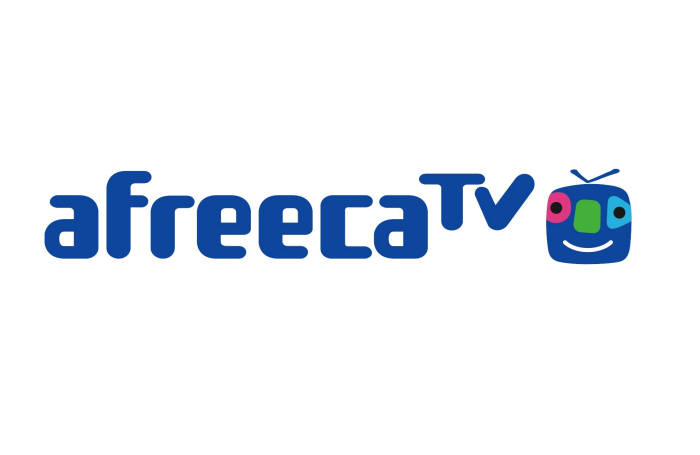

AfreecaTV
아프리카TV(AfreecaTV)는 대한민국의 1인미디어 플랫폼이다. (주)아프리카TV에서 운영하는 인터넷 개인방송 서비스로서, 특별한 기술·장비·비용 없이도 누구나 쉽게 개인용 PC나 모바일 기기(스마트폰, 태블릿 컴퓨터 등)로 언제 어디서나 실시간 생방송을 할 수 있는 개인 1인 미디어이다. 웹캠 방송은 물론 PC 모니터상의 화면을 방송할수 있는 데스크탑 방송이 가능해 누구라도 다양한 소재로 방송할 수 있는 시스템이다. 채팅 화면이 있어 방송인과 시청자 사이에 실시간 소통이 가능하다. 시청자는 사이버 머니인 '별풍선'을 통해 인터넷 방송인에게 자발적으로 후원을 할수도 있다. 또한 다양한 방송자들로 다양한 재미를 느낄수 있다. 2015년 12월 프로게임단 아프리카 프릭스도 창단하였다.
